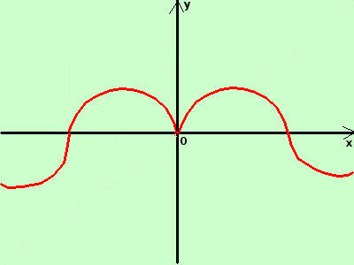

|
sviluppo Data la seguente funzione costruitene approssimativamente il grafico y = sen|x|  Non coinvolgendo il modulo tutta la funzione utilizzo la definizione di modulo ed ottengo
per x maggiore di zero disegno y=senx per x minore di zero disegno la funzione y = -senx, cioe' la funzione y=senx con il segno cambiato (ribaltata attorno all'asse x) Disegno la curva (in rosso) Da notare che, se il modulo coinvolge l'argomento x di una funzione, allora il grafico e' simmetrico rispetto all'asse verticale: infatti dovendo considerare sia i valori x positivi che i valori -x positivi anche loro perche' cambiati di segno avremo sempre gli stessi valori per y |